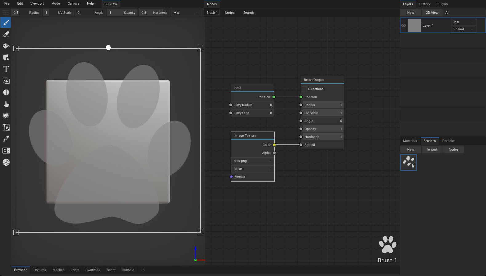
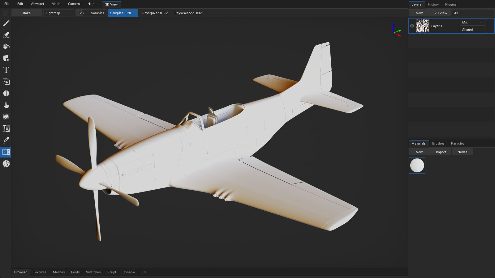

Welcome
Version 1.0alpha

ArmorPaint is a stand-alone software designed for physically-based texture painting. Drag & drop your 3D models and start painting. Receive instant visual feedback in the viewport as you paint.
The alpha version has many rough edges and the experience may be frustrating.
Download
Windows (10 or newer), Linux or macOS (apple silicion) is recommended. Experimental iOS and Android builds are also provided. On desktop, ArmorPaint is a portable application with no installation - just unpack and run.
Requirements
Painting process in ArmorPaint runs on the GPU and the performance mainly depends on a graphics card. Minimum for 4K painting is an Intel HD4000 graphics card. For 16K painting, Nvidia RTX 2080/8GB or better is recommended.
See Preferences to tune performance.
Updating
Latest builds can be downloaded through your Itch Library or Gumroad Library. Learn more here.
In ArmorPaint, press
Help - Check for Updates...to check if newer build is available.
Get Started
Windows
Unpack downloaded archive and run ArmorPaint.exe. In some cases, Windows may prompt you with the unrecognized app dialog - press More Info - Run Anyway.
Linux
Unpack downloaded archive and run ArmorPaint. In some cases, you may need to open terminal in the extracted folder and run ./ArmorPaint.
macOS
Unpack downloaded archive and run ArmorPaint.app.
iOS
Experimental: Available on the AppStore.
Android
Experimental: Available on Google Play.
Controls
Left mouse button / Pento paint.Alt+left mouse buttonto rotate the camera.Alt+middle mouse buttonto pan the camera.Alt+right mouse button/mouse wheelto zoom in and out.- Controls can be customized in
Menu bar - Edit - Preferences... - Keymap. - Default or Blender keymap preset can be selected.
- Keymap presets can be imported and exported.
Workflow
Import Meshes
Drag and drop unwrapped .obj file into the viewport. This will replace the currently painted mesh. .fbx, .blend, .stl, .gltf and .glb files are supported, but the importer is not 100% reliable yet. Up to ~4GB .obj files are supported.
In the Import Mesh dialog:
- Set
Split Bycombo toUDIM Tileto parse imported.objmesh into UDIM tiles. - Enable
Parse Transformsto load per-object transforms from.fbxfile. - Enable
Parse Vertex Colorsto load vertex color data from.fbxor.blendfile.
Modifying imported mesh data:
- Normals can be re-calculated with
Meshes tab - Edit - Calculate Normals. - Up axis can be set with
Meshes tab - Edit - Rotate X / Rotate Y / Rotate Z. - Geometry can be re-centered with
Meshes tab - Edit - Geometry to Origin. - Height output can be applied to geometry with
Meshes tab - Edit - Apply Displacement. - UV map can be auto-generated with
Meshes tab - Edit - UV Unwrap. - Keep in mind that if you modify UV map of the imported mesh, you will have to also export the modified mesh back out of ArmorPaint alongside the painted textures so they can be UV mapped properly.
You can get sample assets for testing in the ArmorPaint cloud.
See
Menu bar - Preferences... - Pluginsto enable support for additional mesh formats.
Import Materials
Drag and drop a folder with PBR texture set onto the viewport. ArmorPaint will recognize the file extensions and create a new material from imported textures. Multiple folders can be dropped at once.
Click on the Materials tab - Import button to import materials from ArmorPaint .arm files or Blender .blend files. wip
You can get starter content in the ArmorPaint Cloud.
Import Textures
Drag and drop .jpg, .png, .tga, .bmp, .gif, .psd, .hdr, .svg, .exr (uncompressed only) or .tif images into the node editor. This will import the image and place a new Image node onto the canvas.
See
Menu bar - Preferences... - Pluginsto enable support for additional image formats.
Export Textures
Click on the Menu bar - File - Export Textures... button.
Resolution: Set resolution for exported textures.Color: Set8bit,16bitor32bitcolor depth.Format:.pngor.jpg(for8bitcolor),.exr(for16bit / 32bitcolor).Layers: Export all visible layers or selected layers only into textures.Preset: Select a pre-configured preset or build a custom one.Genericpreset exports individual PBR textures.Unrealpreset exports packed occlusion-roughness-metallic texture.Unitypreset exports packed metallic-occlusion-smoothness texture.Minecraftpreset exports packed metallic-emission-roughness texture.base_colorpreset exports only the base color texture.Destination: Export textures to disk or pack into the project file atTextures tab.
Configure custom channel swizzling for exported textures in Presets tab:
- Select an existing preset you wish to edit or press
New. - Press
Importto import preset from.jsonfile. - Press
Addto create new texture slot. - Configure
RGBAchannels for each texture slot. - Right-click on texture name and press
Deleteto delete texture slot. .jsonfile for each preset is located in theArmorPaint/data/presetsfolder.
Create object groups in Atlases tab:
- Assign atlas number to objects
- Multiple objects can share a single material via altas
- One texture set per atlas is written during texture export
Export Mesh
Click on the Menu bar - File - Export Mesh... button to save the currently loaded mesh into .obj file. This is handy if you only have access to the .arm project file or want to export the mesh which has been unwrapped / modified in ArmorPaint.
Save / Load Project
Click on the Menu bar - File - Save button (Ctrl + S) to save the currently opened project. Mesh, layers, materials and brushes will be saved into .arm project file.
To open the project file, drag and drop .arm file onto the viewport. .arm files can also be set to open directly with ArmorPaint executable from the OS file explorer.
.obj and other asset types can also be associated if you wish to use ArmorPaint as a model / texture viewer.
Browser
Click on the Status bar - Browser tab to activate the built-in asset browser.
- Click on the
Cloudbutton to access the ArmorPaint cloud. - Drag assets from browser into the viewport to import.
- For
.armmaterials, preview icons are displayed. - Click on the
+button to save the current path into bookmarks panel. - Press
ctrl+fkeys to activate search in the current folder.
Tools
Brush

Select Brush(B) tool from toolbar. Configure brush parameters in the header. Use left mouse button / pen to paint strokes using the selected material.
Radius: Brush size. (HoldFkey and move the cursor)UV Scale: Scale the coords for currently painted material.Angle: Rotate the coords for currently painted material.Opacity: Overall opacity of the brush stroke. (HoldShift+Fkey and move the cursor)Hardness: Fade opacity towards the brush stroke edge.Blending: Blending mode used for painting.TexCoord: Coordinates used for texture sampling. MeshUV Map,Projectfrom view orTriplanarmapping.X-Ray: Paint through mesh faces.Symmetry: Mirror brush strokes on the X, Y and/or Z axis.
Hold brush ruler key (SHIFT) when painting to restrict strokes horizontally or vertically. Hold brush ruler key (SHIFT) and click onto the surface to paint lines.
Eraser

Select Eraser(E) tool from toolbar. Use left mouse button / pen to erase strokes on the currently selected layer.
Radius: Eraser size.Opacity: Overall opacity of the eraser stroke.Hardness: Fade opacity towards the eraser stroke edge.X-Ray: Erase through mesh faces.Symmetry: Mirror eraser strokes on the X, Y and/or Z axis.
Fill
Select Fill(G) tool from toolbar. Press left mouse button / pen to fill active layer with selected material. Fill tool respects active object mask, material mask and color id mask.
UV Scale: Scale the coords for currently painted material.Angle: Rotate the coords for currently painted material.Opacity: Overall opacity of the fill effect.Blending: Blending mode used for fill effect.TexCoord: Coordinates used for texture sampling. MeshUV Map,Projectfrom view orTriplanarmapping.Fill Mode: Allows to fill individual mesh faces.
Decal

Select Decal(D) tool from toolbar. Press left mouse button / pen to apply active material as a decal onto the surface.
Radius: Decal size.Scale X: Scale decal size horizontally.UV Scale: Scale the coords for currently painted material.Angle: Rotate the coords for currently painted material.Opacity: Overall opacity of the decal.Blending: Blending mode used for applying decal.X-Ray: Apply decal through mesh faces.Symmetry: Mirror decal on the X, Y and/or Z axis.
Text

Select Text(T) tool from toolbar. Press left mouse button / pen to apply active material as a text onto the surface. Drag and drop a .ttf file into the viewport to change the font.
Radius: Text size.UV Scale: Scale the coords for currently painted material.Angle: Rotate the coords for currently painted material.Opacity: Overall opacity of the text.Blending: Blending mode used for applying text.Font: Select which font to apply.Text: Type a text to apply.X-Ray: Apply text through mesh faces.Symmetry: Mirror text on the X, Y and/or Z axis.
See
Fonts tabto manage imported fonts. Click2D Viewto preview the font.
Clone

Select Clone(L) tool from toolbar. Hold ALT to set clone source location. Use left mouse button / pen to clone the material from source location to active location.
Radius: Brush size.Opacity: Overall opacity of the brush stroke.Blending: Blending mode used for painting.X-Ray: Paint through mesh faces.Symmetry: Mirror brush strokes on the X, Y and/or Z axis.
Blur

Select Blur(U) tool from toolbar. Use left mouse button / pen to blur the material applied to the surface.
Radius: Brush size.Opacity: Overall opacity of the brush stroke.Blending: Blending mode used for painting.X-Ray: Paint through mesh faces.Symmetry: Mirror brush strokes on the X, Y and/or Z axis.
Smudge

Select Smudge(M) tool from toolbar. Use left mouse button / pen to smudge / smear the material applied to the surface.
Radius: Brush size.Opacity: Overall opacity of the brush stroke.Blending: Blending mode used for painting.X-Ray: Paint through mesh faces.Symmetry: Mirror brush strokes on the X, Y and/or Z axis.
Particle wip

Select Particle(P) tool from toolbar. Use left mouse button / pen to apply particles onto the surface.
Radius: Particle emitter size.Opacity: Overall opacity of the emitted particle.Blending: Blending mode used for applying particles.X-Ray: Apply particles through mesh faces.Symmetry: Mirror particles on the X, Y and/or Z axis.
Bake

Select Bake(K) tool from toolbar. Pick bake mode, then click the Bake button or press and hold left mouse button / pen in viewport to apply bake into the base color channel of active layer or mask. For ray-traced bake modes, multiple samples (set via the Samples option) will get accumulated until the operation is complete.
See Baking to learn about bake modes.
Color ID

Select Color ID(C) tool from toolbar. Drag and drop color-id texture onto the viewport and assign it into the Color ID Map field. Afterwards, click on a model to pick a specific color. All drawing operations will now be restricted to this color. Picked color can be removed with a Clear button.
Picker

Select Picker(V) tool from toolbar. Press left mouse button / pen in viewport to read material values from the surface. Base color, normal, occlusion, roughness and metallic values will be displayed in the header.
Select Material: When enabled, the material you pick from the mesh surface will also get auto-selected in theMaterials tab.Mask: When set toMaterial, all drawing operations will be restricted to the surface where picked material is painted.
Material

Select Material tool from toolbar. A live material preview will be displayed in the viewport, allowing for easier material creation.
Gizmo wip
Select Gizmo tool from toolbar. A gizmo will appear in the viewport allowing you to adjust the transform of objects in the scene.
Materials
Materials in ArmorPaint are composed with nodes. When painting, brush applies a material onto the surface. To compose a material, open node editor by clicking Materials tab - Nodes (TAB).
- Use toolbar at the top to add new nodes.
- Press
spaceto search for nodes. - Drag textures from
Textures tabor file explorer into the node editor to createImagenodes.
Material preview is displayed instantly in the Materials tab as the nodes are assembled.
Right-click onto material preview to expose material operations:
- Set which channels the material should affect.
- Create
Fill Layerfrom selected material. Duplicatematerial.Exportmaterial into.armfile.Bakematerial into textures.Deletematerial.
Drag and drop material into viewport or Layers tab to create a fill layer.
ArmorPaint material nodes mimick the Cycles nodes. See Cycles nodes documentation.
See Import Materials.
See currently implemented material nodes.
Use
Swatches tabto save and load color sets.
Neural Nodes
All neural node processing in ArmorPaint is done locally on user device. Once AI models are downloaded, internet connection is not required. A minimum of 4GB of video memory is recommended. ArmorPaint uses models published under open source licenses.
Neural nodes are available on Windows (Vulkan, CUDA), Linux (Vulkan) and macOS (Vulkan via MoltenVK).
Currently supported models:
- Stable Diffusion (4gb gpu memory) -
Inpaint Image,Outpaint Image,Text to Image,Tile Image,Vary Image - Marigold (6gb gpu memory) -
Image to Depth,Image to Normal Map,Image to PBR - Real-ESRGAN (1gb gpu memory) -
Upscale Image - Qwen Image (13gb gpu memory) -
Text to Image - Qwen Image Edit (13gb gpu memory) -
Edit Image,Inpaint Image,Outpaint Image,Tile Image,Vary Image - Wan (10gb gpu memory) -
Text to Image
Neural node processing is powered by the open-source stable-diffusion.cpp library.
Setup

Navigate to the Menu bar - Edit - Preferences... - Neural tab. Pick desired model and click the Download button. Once the download is completed, neural node in the material editor is ready to be used.
Press Run on the neural node to process it. Once finished, double click on node header or click the eye icon to preview the node output.
Edit Image Node

Edit image connected to the color input by describing the changes via text prompt.
Image to Depth Node

Extract depth map from a photo image.
Image to Normal Map Node

Extract normal map from a photo image.
Image to PBR Node

Extract base color, occlusion, roughness, normal map and height from color input. A photo image is expected as a color input.
Inpaint Image Node

Paint a mask in the viewport and connect it to the mask input. Outputs a texture where mask area is filled with new content.
Outpaint Image Node

Outputs a zoomed out image.
Text to Image Node

Generate an image described via text prompt.
Tile Image Node

Outputs a tileable texture with removed seams from color input.
Upscale Image Node

Upscales color input by a factor of 4.
Vary Image Node

Generates a new image variant guided with text prompt.
Check out the gallery to see nodes in action.
Brushes

Brushes in ArmorPaint are composed with nodes. When painting, brush nodes are evaluated for each painted stroke. To compose a brush, open node editor by clicking Brushes tab - Nodes (TAB).
- Use toolbar at the top to add new nodes.
- Press
spaceto search for nodes. - Drag textures from
Textures tabor file explorer into the node editor to createImagenodes.
Brush preview is displayed instantly in the Brushes tab as the nodes are assembled.
Right-click onto brush preview to expose brush operations:
- Duplicate brush.
- Export brush into
.armfile. - Delete brush.
Brushes can be imported from
.armfiles by clickingBrushes tab - Import.See currently implemented brush nodes.
Brush Mask
To use image as a brush mask:
- Drag and drop brush mask image into the node editor.
- Connect newly placed
Image Texturenode to theBrush Output - Opacitysocket.
Brush Jitter
Lazy Mouse
- Raise
Lazy Radiusvalue of theInputbrush node to make the paint cursor follow the mouse in delay. This can be useful to paint smooth strokes. - Raise
Lazy Stepvalue of theInputbrush node to paint strokes in steps.
Directional Brush
- By enabling the
Directionvalue of theBrush Outputnode, painted strokes will follow the brush path. Decal and brush mask will be oriented to match the direction of a brush.
Brush Stencil
To use image as a brush stencil:
- Drag and drop stencil image into the node editor.
- Connect newly placed
Image Texturenode to theBrush Output - Stencilsocket. - Hold
ctrl(stencil_transform) key to show transform controls. - Hold
z(stencil_hide) key to make stencil invisible while still taking effect.

Layers

To create a new layer, press Layers tab - New and select a layer type:
Paint Layer.Fill Layerfrom active material.Decal Layerfrom active material.Black MaskorWhite Mask.Fill Maskfrom active material.Groupcontaining active layer.
Brush will paint onto the currently selected layer.
- Layer can be parented to the specific object by setting the
Objectcombo property. This allows to utilize multiple UV maps per project - each object having it's individual UV map. - Use drag and drop to reorder layers.
- Double-click onto layer, mask or group name to rename it.
Right-click on the layer to expose layer operations:
- Set
Opacity,ResolutionandColordepth. - For fill layers, set
UV Scale,AngleandTexCoordtype. - Convert layer to
Fill LayerorPaint Layer. Exportselected layer.Mergethe layer down.Duplicatethe layer.Clearthe layer.Deletethe layer.- Set which channels the layer should affect.
Right-click on the mask to expose mask operations:
- Set
OpacityandResolution. - For fill masks, set
UV Scale,AngleandTexCoordtype. - Convert mask to
Fill MaskorPaint Mask. Exportmask texture.Mergethe mask down.Duplicatethe mask.Clearthe mask.Applymask to parent layer.Deletethe mask.Invertthe mask.
Drag textures from
Textures tabinto the viewport orLayerstab to create mask for active layer.
2D View
Click Layers tab - 2D View to show the channels of the selected layer. The 2D View is updated immediately as you paint.
- Paint tools are usable directly inside the 2D view.
- Press
Textures tab - 2D Viewto show selected image inside 2D view.
In the 2D View top bar:
- Show the selected layer or all visible layers.
- Select which channel to show.
- Display UV map as a wireframe.
- Tile the texture.
Viewport
Set viewport parameters in Menu bar - Viewport.
- Enable
Distract Free(F11) mode. Toggle Fullscreen(alt+enter) mode.- Set
Environmentintensity. - Enable
Split Viewfor side-by-side viewports. - Enable
Cull Backfacesto skip drawing backward facing polygons. - Enable
Filter Texturesto apply linear filter when sampling textures references by material. - Show
Wireframein the viewport. - Enable
Texelsto visualize texture pixels in the viewport with a checker pattern. - Show 3D
Compassin the viewport. - Enable
Envmapto draw environment map in the viewport. - Enable
Blur Envmapto use blurred version of the environment map. - Press
Reset Envmapto replace currently imported environment map with the default one.
Drag and drop a
.hdrfile onto the viewport to change the environment map.Hold
Ctrl+middle mouse buttonto rotate environment map.To simulate pixel-art like painting, disable
Filter Texturesoption and setSuper Samplein preferences to0.25x.
Viewport Mode
Set viewport render mode in Menu bar - Mode.
- Pick
Litto draw viewport with applied lighting using the rasterizer. - Pick specific channel to visualize it with no applied lighting.
- Pick
Path Tracedto draw viewport with interactive path-tracer. (on DirectX / Vulkan raytracing GPUs and Metal devices*)
Path Traced Viewport wip
- Available on GPUs with DirectX (Windows) / Vulkan (Linux) raytracing support.
- Available on macOS with Apple silicion.
- Available on iOS with Apple M1 or newer.
- The renderer favors performance.
Camera
Set camera parameters in Menu bar - Camera:
- Set specific camera viewpoint.
Orbit,Zoom InandZoom Outcamera.Resetcamera.- Set
FoV(field of view). - Set
PerspectiveorOrthographiccamera type. - Set camera mode:
Orbit- Rotate camera around the mesh.Rotate- Rotate mesh around the origin.Fly- Holdright mouse buttonand move camera freely using theWASDandQEkeys.
Baking

Select Bake tool from the toolbar.
AO (raytracing GPUs): Bake ambient occlusion.Strength,RadiusandOffsetcan be configured.
Curvature: Bake mesh curvature.Strength,RadiusandOffsetcan be configured.
Lightmap (raytracing GPUs): Bake irradiance from the environment.
Bent Normal (raytracing GPUs): Bake the normals indicating the least occluded direction for a point.
Thickness (raytracing GPUs): Bake mesh thickness. Works similar to AO baker, but uses flipped normals.
Normal: Bake normal map from high-poly mesh.Object Normal: Bake object-space normals encoded into (0-1) range.Height: Bake height map from high-poly mesh.Derivative: Bake derivative normals from high-poly mesh. wipPosition: Bake object-space positions encoded into (0-1) range.TexCoord: Bake mesh uv map.Material ID: Bake colored material IDs.Object ID: Bake colored object IDs.Vertex Color: Bake vertex color data.
Use
AObaker with smallRadiusto bakeCavity.
Preferences
Click Menu bar - Edit - Preferences... to show the preferences window.
Interface
Language: Set localization. See currently available translations.UI Scale: Scale up the user interface when running on high-resolution display. By default, 2X scale is applied during the first startup for high-resolution displays.Camera Zoom / Rotation / Pan Speed: Intensity of camera movements.Direction to Zoom: Mouse / pen direction to perform camera zoom.Node Preview: Draw previews of material nodes inside the node editor.Wrap Mouse: Wrap mouse around view boundaries during camera control.Show Asset Names: Draw labels below each material, brush and texture icon.Touch UI: Enabled by default on iOS and Android.Splash Screen: Show recent projects list upon ArmorPaint startup.Grid Snap: Align material nodes in node editor to a grid.- Click
Restore - Confirmbutton to revert back to default settings. - Click
Restore - Import...button to import settings from older ArmorPaint version. - Click
Reset Layoutbutton to revert all layout changes.
Theme
- Select
default(dark),blackorlighttheme. - Click
Newbutton to create custom theme. - Click
Importbutton to import theme from file. - Click
Exportbutton to export theme into file. - Set
Viewport Colorto draw when environment map is hidden. - Set color and size of individual theme elements.
- Set
StraightorCurvedlink style for node connections.
Usage
Undo Steps: Set the number of undo steps to keep. Using less undo steps may improve performance when running on GPU with constrained memory.Dilate Radius: Stretch brush strokes and bake result on the uv map to prevent seams.Default Camera Controls: Orbit, rotate or fly.Default Layer Resolution: Resolution of new layers.Scene Atlas Resolution: Used in path-traced mode when rendering objects with separate uv maps.Cloud Server: Address of the S3 server used byBrowser tab - Cloud.Live Material Preview: Update material preview immediately during node editing.Live Brush Preview: Show brush paint preview in the viewport and 2d view.Depth Reject / Angle Reject: Depth and angle rejection for 3D cursor.GPU Inference: Use GPU to accelerate neural node processing.
Pen
Brush Radius: When painting with a pen, pressure affects the radius of brush.Brush Hardness: Pressure affects the hardness of brush.Brush Opacity: Pressure affects the opacity of brush.Brush Angle: Pressure affects the angle of brush.Sensitivity: Manual pen pressure sensitivity control.
ArmorPaint uses
Windows InkAPI on Windows. When using a Wacom tablet, ensureUse Windows Inkoption is enabled in Wacom Tablet Properties.When using a Wacom tablet on Windows, you can rotate the viewport by assigning
Alt+Left clickmodifier onto pen button in Wacom Tablet Properties.Pen pressure is expected to work on Windows, Linux, macOS, Android and iOS.
{kind=link}
{kind=link}
Viewport
On faster GPUs:
- Raise
Super Sampleto 2X/4X for improved anti-aliasing.
On slower GPUs:
- Disable
SSAO (screen-space ambient occlusion)for improved performance.
Additional options:
- Set
Path Tracermode:Corefor performance,Fullfor features. (raytracing GPUs) - Set clipping values with
Clip StartandClip End. - Enable
Bloom. - Set
Vignetteintensity. - Set
Noise Grainintensity. - Set
Displacement Strengthapplied by height channel in the viewport.
Keymap
Select an existing preset or define custom keyboard shortcuts.
- Use
left,middle,righthandles to reference mouse buttons / pen. - Use
+character to reference multiple keys: ie.ctrl+1. - Click
Importbutton to import keymap from file. - Click
Exportbutton to export keymap into file.
Plugins

Press Plugins tab - Manager to open the plugin manager.
- Click
Importto install a new plugin from.jsor.zipfile. - Click
Newto create a new hello-world plugin. - Enable desired plugins from the list.
- Right-click onto plugin name to expose plugin operations:
Exportplugin file for distribution.Editplugin in a text editor.Deleteplugin.- Controls for enabled plugins are displayed in the
Plugins tab. - Some plugins may not expose controls but add new import / export file formats.
Live-Link
Live-link plugins are currently in development:
Plugin Development
Plugins are written in JavaScript. For a minimal example, see the bundled hello_world.js file located in the ArmorPaint/data/plugins folder.
A plugin development guide will be provided soon.
FAQ
Faces are missing on the imported mesh
The missing faces are likely caused by inverted normals & backface culling. Reversing normals for the affected faces should resolve the issue.
There is also a way to disable backface culling in ArmorPaint at Menu bar - Viewport - Cull Backfaces, however it may cause issues with lighting due to normals pointing in the opposite direction.
If the issue persists, triangulating the mesh before importing it to ArmorPaint might help.
Mesh gets painted on multiple places at once
Make sure the UV map has no overlapping faces. It can be resolved by unwrapping the mesh so that each face occupies unique space on the UV map, or using multiple layers to paint objects with multiple UV sets.
Simple meshes can be unwrapped directly in ArmorPaint via Meshes tab - Edit - UV Unwrap.
Black spots appear on the imported mesh
Make sure all mesh faces are present on the UV map.
Download of neural model does not start
Check that the ArmorPaint connection is not blocked by a firewall or a sotfware like vmware fusion.